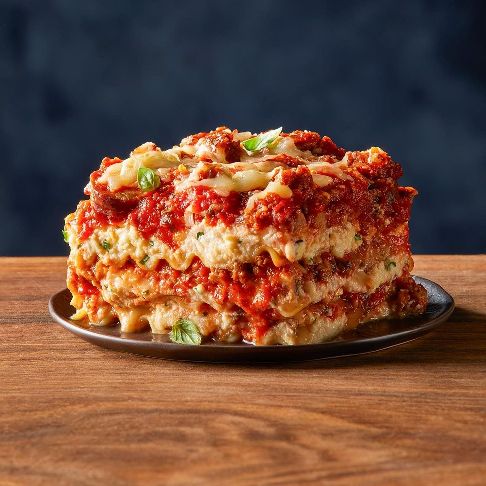

Easy HomemadeLasagna

Lasagna is a classic Italian dish that is loved by many. This easy lasagna recipe will guide you through the steps to create a delicious and hearty meal that your family and friends will enjoy.
Ingredients
- 1 pound ground beef
- 1 onion, chopped
- 2 cloves garlic, minced
- 1 (24-ounce) jar marinara sauce
- 1 (15-ounce) container ricotta cheese
- 2 cups shredded mozzarella cheese
- 1/2 cup grated Parmesan cheese
- 12 lasagna noodles, cooked and drained
- Salt and pepper to taste
Instructions
- Preheat your oven to 375°F (190°C).
- In a large skillet, cook the ground beef, onion, and garlic over medium heat until the meat is browned and the onion is tender. Drain any excess fat.
- Add the marinara sauce to the skillet and simmer for 10 minutes. Season with salt and pepper to taste.
- In a separate bowl, combine the ricotta cheese, 1 cup of mozzarella cheese, and 1/4 cup of Parmesan cheese. Mix well.
- In a 9x13-inch baking dish, spread a thin layer of the meat sauce on the bottom. Place 3 cooked lasagna noodles on top of the sauce. Spread a layer of the ricotta cheese mixture over the noodles, followed by a layer of meat sauce. Repeat the layers until all ingredients are used, finishing with a layer of meat sauce on top. Sprinkle the remaining mozzarella and Parmesan cheese over the top.
- Cover the baking dish with aluminum foil and bake for 25 minutes. Remove the foil and bake for an additional 5 minutes, or until the cheese is bubbly and golden brown.
- Let the lasagna cool for 10 minutes before serving. Enjoy!
Home